I. BÖLÜM
ALFA - BAŞLANGIÇ
Cennet Bahçesi Asya’da değil, Pasifik Okyanusu üzerindeki, çoktan suya gömülmüş olan bir kıtadaydı. Yaratılış’ın Kitabı Mukaddes’teki hikâyesi, yedi gün ve yedi gecenin bu efsanevi öyküsü, ilk olarak Nil veya Fırat Havzası halklarından değil, bu batık kıtadan, insanoğlunun anayurdu olan Mu’dan geldi.
Bu iddia, Hindistan’da keşfettiğim çoktandır unutulmuş kutsal tabletlerin üzerindeki karmaşık kayıtlar ve başka ülkelerde bulunan benzerleri sayesinde kanıtlanıyor. Bu kayıtlar, 64 milyon nüfuslu bu ülkenin, günümüzden elli bin yıl önce, birçok yönden bizden daha gelişmiş bir uygarlık kurduğunu anlatıyor. Belgeler diğer birçok konunun yanında, insanoğlunun Mu’nun gizemli topraklarında yaratılışından da bahsediyor.
Bu bilgileri, başka antik medeniyetler hakkındaki yazılı belgelerin, tarih öncesi harabelerin ve jeolojik bulguların ortaya çıkardığı kayıtlarla karşılaştırdığımda, tüm bu uygarlıkların kültürlerini tek bir ortak atadan, Mu’dan almış olduklarını gördüm. Bu sebeple, Kitabı Mukaddes’teki yaratılış hikâyesinin bugün bildiğimiz hâlinin, Mu’nun beş yüz asrı aşan tarihinden bahseden bu tabletlerden derlenen etkileyici hikâyelerden evrimleştiğinden emin olabiliriz. Yaratılışın bu orijinal hikâyesinin ortaya çıkış öyküsü bizi elli yıl önceye götürüyor.
Hindistan’da kıtlık zamanıydı. Bir üniversite tapınağının başrahibine yardım çalışmalarında asistanlık ediyordum. Başlarda bundan haberim olmasa da bu kişi arkeolojiye ve antik kayıtlara büyük ilgi duyuyordu ve bu konularda başka kimsenin sahip olmadığı bir birikime sahipti.
Bir gün benim tuhaf bir kabartmayı deşifre etmeye çalıştığımı fark etmesi sonucu dikkatini çekmemle hayatımda görmüş olduğum en sağlam dostluklardan birinin temeli atılmış oldu. Bana o tuhaf yazıtın sırlarını nasıl çözeceğimi öğretti ve beni daha zorlu işlere hazırlayacak şekilde eğitmeyi teklif etti. İki yıldan uzun bir süreyi, rahip dostumun insanoğlunun orijinal dili olduğuna inandığı ölü bir dili büyük bir azimle öğrenerek geçirdim. Bana bu dilin Hindistan’da sadece iki başrahip tarafından daha bilindiğinden bahsetti. Görünüşte basit olan yazıtların çoğunun yalnızca Kutsal Kardeşler, yani anayurttan kolonilere kutsal yazıtları, dini ve bilimi öğretmeleri için yollanan bir rahipler kardeşliği olan Naacaller için özel olarak tasarlanan gizli anlamlar içermeleri büyük zorluk yaratıyordu.
Bir gün bir konuşma sırasında bana tapınağın gizli arşivlerinde birtakım antik tabletler olduğundan bahsetti. İçeriklerinin ne olduğunu bilmiyordu, çünkü sadece muhafazalarını görebilmişti. Konumu gereği yazıları incelemesine bir mani olmasa da o bunu hiç yapmamıştı, çünkü bunlar el sürülmemesi gereken kutsal kayıtlardı. Bu gizli yazılardan bahsederken merakımı yeni bir boyuta taşıyan bir şey söyledi. İnsanoğlunun efsanevi anayurdundan, gizemli diyar Mu’dan daha önce bahsermişti. Şimdi ise değerli tabletlerin Naacaller tarafından ya Burma’da ya da kayıp anayurtta yazıldıklarına inanıldığını itiraf ederek şaşkınlığımı daha da arttırıyordu. Yazıların Hindistan’ın yedi Rishi (kutsal) şehrinden birinden alınmış devasa bir koleksiyonun yalnızca küçük bir parçası olduğunu öğrendiğimde, onları görmek yönündeki sabırsızlığım da arttı. Çoğunun kaybolduğuna inanılıyordu. Yine de eskinin tozlarla kaplı hâlde karanlıkta bekleyen bu antik parçalarını görme fırsatım hâlâ vardı.
Günler boyu bu gizli hazineye ulaşmanın bir yolunu keşfetmeye çalışsam da dostum, onları görme isteğimi nazik ama kararlı bir biçimde geri çevirmeyi sürdürdü.
“Oğlum” diyordu, sesinde bir parça hüzünle, “eğer elimde olsa bu arzunu yerine getirirdim ama bu mümkün değil. Onlar muhafazalarından çıkarılmaması gereken kutsal emanetler. Dileğini yerine getirmeye cesaret edemem.”
“Ama bir düşün. Doğru şekilde muhafaza edilmemiş ve bu yüzden muhafazaları içinde parçalanıp dağılıyor olabilirler.” dedim. “En azından güvende olup olmadıklarını anlamak için onlara bakmamız gerekir.”
Fakat bu tartışma da bir sonuca varmadı. Altı ay geçmişti. Merak veya tabletlerin durumu hakkındaki endişesi rahip dostum karşısında galip gelmemi sağlamıştı. Bir akşam önündeki masada antik tabletlerden ikisi, bir kumaş parçası üzerine bırakılmış hâlde duruyordu. Uzun zamandır saklı duran tabletleri merakla inceledim. Görünüşe bakılırsa güneşte pişmiş kilden yapılmışlardı ve aşırı derecede tozluydular. Tabletleri büyük bir dikkatle temizledikten sonra, dostumun yardımıyla öğrenmekte olduğum ölü lisanla yazılmış olan sembolleri çözmeye koyuldum.
Şans o akşam benden yanaydı, çünkü o iki değerli kil parçası öyle önemli bilgiler veriyordu ki, ikimiz de onların Mu’nun gerçek kayıtları olduğu konusunda hemfikir olduk. Öte yandan, anlattıkları tarih ikinci tabletin sonunda, oldukça ilginç bir noktada ve beklenmedik bir şekilde sonlanıyordu. Başrahip bile tabletin geri kalanını görmek yönündeki merakını bastıramamıştı.
“Bu işi burada bırakmamız imkânsız, oğlum.” dedi. “Yarın tabletlerin geri kalanını getireceğim.”
Şansımıza, getirdiği diğer tabletler aynı seriden değildi. Bambaşka bir konuya değiniyorlardı ve birbirini takip eden tabletleri bulmak için tümünü dışarı çıkarmamız gerekiyordu. Bu bir sorun yaratmadı, çünkü tabletlerin çoğu saklama koşullarının yetersizliği yüzünden kırılmıştı. Bunları macunla onardık. Onları tekrar kutulara yerleştirirken her tableti yumuşak kağıt ve pamukla sardım.
“Oğlum” dedi rahip, “inanıyorum ki bu hatıraları korumamı öğütleyen kutsal bir uyarı, senin ağzından bana iletildi.”
Hemen ardından tabletlerin aylar süren ve yoğun bir konsantrasyon gerektiren çevirisine başladık, fakat sonunda ödülümüz bu çabamızın hakkını verecek türdendi. Yazılar detaylı bir şekilde dünyanın ve insanın yaratılışını ve insanın ilk kez ortaya çıktığı yeri, yani Mu’yu anlatıyordu.
İnsan hakkındaki büyük önem taşıyan bir sırrı açığa çıkardığımı fark ettiğimde diğer kayıp tabletleri aradım fakat bu çabam boşunaydı. Hindistan’ın her yerindeki tapınakların başrahiplerine kendimi tanıtan mektuplar yolladım ama her seferinde soğukluk ve şüpheyle karşılandım.
“Bahsettiğin tabletleri hiç görmedim.” diyordu her biri ve şüphesiz de doğruyu söylüyorlardı. Dostum gibi, muhtemelen sadece muhafazaları görmüşlerdi.
Bir keresinde kayıp kayıtları arayışım sırasında Burma’daki antik bir Budist tapınağını ziyaret ettim.
“Nerden geliyorsun?” diye sordu başrahip, bana saklı bir şüpheyle bakarak.
“Hindistan’dan.” diyerek yanıtladım.
“O hâlde Hindistan’a geri dön ve onları bizden çalan hırsızlardan onları sana göstermelerini iste.” dedi, ayaklarımın önündeki toprağa tükürdü ve arkasını dönüp uzaklaştı.
Bu başarısızlıklar az da olsa cesaretimi kırmışsada tabletlerden zaten oldukça değerli bilgi edindiğimden dolayı başka eski uygarlıklardan kalma yazıları incelemeye ve onları Mu hakkındaki efsanelerle karşılaştırmaya karar verdim.
Bunu yaptığımda erken dönem Yunan, Kalde, Babil, Pers, Mısır ve Hindistan medeniyetlerinin şüpheye yer bırakmayacak biçimde Mu Uygarlığı’nın ardılları olduklarını öğrendim. Araştırmalarımı sürdürdüğümde bu kayıp kıtanın Hawaii’nin kuzeyinde bir noktadan güneyde Fiji ve Paskalya Adası’na kadar uzandığını ve şüphesiz insanoğlunun ilk yaşama alanı olduğunu keşfettim. Bu güzel ülkede, daha sonradan dünyaya
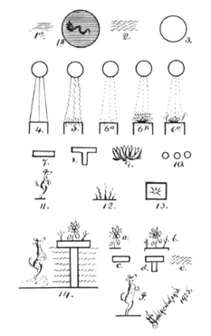
James Churchward tarafından çizilmiştir.
Naacal Tabletleri’nde bulunan bazı ilgi çekici sembol ve desenler
yayılan bir halkın yaşadığını ve ülkenin topraklarının 12.000 yıl önce korkunç depremlerle denize gömülerek bir ateş ve su girdabı içinde yok olduğunu öğrendim.
Dünyanın yaratılışının orijinal bir hikâyesi de öğrendiklerim arasındaydı. İnsanın ilk var olduğu yer Mu kıtasıydı. Bu hikâyeyi Mu’dan başlayıp, kaybolan kıtadan göç edenlerin yerleştiği Hindistan’a, Hindistan’dan Mısır’a, Mısır’dan Musa’nın onları kopyaladığı Sina Tapınağı’na ve Musa’dan da Ezra’nın (Üzeyir) 800 yıl sonraki hatalı çevirilerine kadar takip ettim. Bu, Mu’nun gelenekleriyle bugün bildiğimiz yaratılış hikâyesi arasındaki büyük benzerlikleri gördüklerinde konuya yakından incelememiş olanlara bile akla yatkın gelecektir. Tabletlerde yazılanları açıklamaya başlamadan önce, bunların üzerinde bulunan desenleri, açıklamaları ve çevirileriyle birlikte göstereceğim.
Desen 1a. İnce, düz, yatay çizgiler. Boşluk anlamına gelen sembol.
Desen 1b. Boşlukta yol alan yedi başlı yılanı temsil ediyor, figürün çevresindeki çember ise evreni.
Desen 2. Dalgalı yatay çizgiler. Dünyevi suların sembolü.
Desen 3. Çember, güneşin bir resmi. Güneş tanrısal özelliklerin genel bir sembolüydü.
Desen 4. Güneşten uzanan ince dikey çizgiler, dünyanın ışık kuvvetine benzerlik gösteren ve harekete geçtiklerinde dünyaya ışık veren güneş kuvvetlerini temsil ediyor.
Desen 5. Güneşten uzanan dikey dalgalı çizgiler, dünyanın ısı kuvvetine benzerlik gösteren güneş kuvvetlerini temsil ediyor. Bu kuvvetler karşılaşıyor ve dünyanın ısı kuvveti aktif duruma geliyor.
Desen 6a. Güneşten uzanan dikey kesik çizgiler, dünyanın yaşam kuvvetine benzerlik gösteren güneş kuvvetlerini temsil ediyor.
Desen 6b. Dünyanın sudaki kozmik yumurtalarda bulunan yaşam kuvvetiyle çarpışıp onları hayata getiren, benzer güneş kuvvetlerini temsil ediyor.
Desen 6c. Dünyanın topraktaki kozmik yumurtalarda bulunan yaşam kuvvetiyle çarpışıp onları kuluçkadan çıkaran, benzer güneş kuvvetlerini temsil ediyor.
Desen 7. Bu, eskiler tarafından Mu’ya verilen bir geometrik sembol. Aynı zamanda Mu hiyeratik alfabesinin (M.Ö. 2500 yılı civarında, hiyerogliften aşamalı olarak doğan Mısır yazısına verilen ad) hiyeroglifteki formel resim yazısını, aynı ilkelere dayanan yuvarlak hatlı bir yazıya dönüştürmüştür. M harfi; Moo, Ma ana, yurt, arazi, ülke ve ağız anlamlara geliyor.
Desen 8. Tau Mu’da dirilişin sembolüydü. Bu, Güneyhaçı Takımyıldızı’nın bir resmi. Tau aynı zamanda “öne çıkarma, açığa çıkma” anlamlarına da gelir.
Desen 9. Lotus, Mu’yu temsil eden çiçekti. Söylendiğine göre lotus dünya üzerinde açan ilk çiçekti ve bu sebeple anayurdun sembolik çiçeği olarak kabul edilmişti.
Desen 10. Üç, Mu’yu simgeleyen sayı olarak seçilmişti. Bunun sebebi kıtanın, birbirinden dar boğazlar veya denizlerle ayrılmış üç kara parçasından oluşmasıydı.
Desen 11. Keh -sıçrayan geyik- Naacal Tabletleri’nde sık rastlanılan bir figür ve ilk insanı temsil ediyor. Bu hayvan sıçrama yeteneği yüzünden ilk insanın sembolü seçilmişti, zira insan dünyaya gelişimini tamamlamış bir hâlde gelmiş, yaşamın doğal gelişim sürecinden geçmeden, ilk ve asıl hâliyle dünyaya “sıçramıştı.” Başka bir deyişle, özel bir yaratımdı.
Desen 12. Bu, Mu’da ateşin antik sembolüydü. Çizgiler, tabanda kalın başlayıp, gittikçe dalgalanıp incelerek uçta bir nokta hâlini alıyor.
Desen 13. Bu desen, dağların yükselişini ve gaz kemerlerinin şekillenmesini anlatan bir tablette ortaya çıkıyor. Bu sayede Mısırlıların ateş ve kutsal scarab (bok) böceği sembollerini nereden aldıklarını da öğrenmiş oluyoruz. Naacaller bu sembolleri Hindistan’dan Mısır’a taşıdılar. Mısır’ın ateş sembolü, Naga’nın değiştirilmiş hâlinden başka bir şey değildi. Mısırlılar Naga’ya bir kabza eklediler ve onu bir kılıç hâline getirdiler.
Mısırlıların yaptığı bu değişikliğin veya düzenlemenin sebebini kestirmek güç değil. Hiyerogliflerinde iki çeşit ateşi tasvir etmek istediler: Yeraltı dünyasının alevleri ve gerçek alevler. Bunu kendi tabirleriyle “alevler içindeki dipsiz bir uçuruma düşen” ve “batarken her yanı alevlerle sarılan” anayurdun yıkımının kaydını tutabilmek için yaptılar. Bu sembol, Mısır’ın kutsal kitabı Ölüler Kitabı’nı inceleyen bölümde de görülecek.
Desen 14. Bunun tüm Naacal Tabletleri’ndeki desenler arasındaki en ilgi çekenlerden biri olduğunu düşünüyorum. Bu desen, insanoğlunun Mu diyarında dünyaya gelişini temsil ediyor. Bunu, öncelikle sembolleri ayrı ayrı sunarak, parçalara ayrılmış biçimde inceleyeceğim.
Lotus, Mu’nun sembolü olan çiçek.
Mu’nun rakamsal karşılığı olan üç adet bitki.
M harfi, Mu’nun rahip alfabesindeki karşılığı.
Tau; dirilişin, “meydana çıkma, öne çıkma” ve “açığa çıkma”nın sembolü. Tau’nun baş kısmı olan Mu alfabesinin M harfi, aynı zamanda yurt anlamına da geliyor, dolayısıyla bir yurt ortaya çıkıyor.
Suyun sembolü. Ortaya çıkan yurt sularla çevrilmiş durumda.
Keh, yani ilk insan.
Bu desende, ortaya çıkan ülkenin adı, yani Mu, üç kez A, B ve C sembolleriyle söyleniyor. F’deki insan, ruhundaki bütün coşkunlukla “sıçrayarak” dünyaya gelmekte. Bu desen, Mu hakkındaki bilginin peşinden dünyayı gezmemin sebebiydi.
Tabletlerin birçok konudan bahsettiklerini ve her konuyu açıklamak için birden fazla tablet gerektiğini fark ettim. Her seri en az iki, en fazla on altı tabletten oluşuyordu. Şansımıza, bulduğumuz tabletlerden ikisi, çeşitli sembol ve hiyerogliflerin anahtarı niteliğindeydi. Tabletleri şu şekilde düzenledim.
Seri 1: İnsanın ortaya çıkışı da dahil olmak üzere yaratılışın tasviri.
Seri 2: Dağların “yeraltının alevleri” (gazlar) sayesinde yükselişi ve diğer gazların düzenlenişi hakkında bilgi.
Seri 3: Evrenin her yanına yayılmış olan büyük kuvvetlerin köken ve işleyişleri.
Seri 4: Dünya’nın temel büyük kuvvetinin kökeni ve işleyişi, bu gücün iki kısmı ve bu kısımlar arasındaki farklılıklar.
Seri 5: İki ana bölümden birinin alt bölümü; dünyanın büyük atomik kuvvetinin kökeni ve işleyişi.
Seri 6: Yaşamı yaratan ve devam ettiren kuvvetin kökeni ve işleyişi. İki ana bölümden birinin alt bölümü.
Seri 7: Yaşamın kaynağı, tanımı ve yaşam formlarının, dünya geliştikçe geçirdikleri kaçınılmaz değişimler.
Seri 8: İnsanın yaratılışı, tanımı ve diğer yaratılanlardan farklı olmasının sebepleri.
Seri 9: İnsanın dünya üzerinde ortaya çıkışı ve bu çıkışın gerçekleştiği, tabletlerde “İnsanoğlunun Anayurdu” denilen yer. Bu tabletlerin uzun, muhtemelen Mu’nun ilk çağlarını anlatan bir serinin yalnızca başlangıcı olduğuna şüphe yok.
Seri 10: Bu seri, her biri diğer tabletlerin iki katından daha büyük olan iki tabletten oluşuyordu. Bu tabletler, diğer tabletlerdeki yazı ve desenlerin çözülebilmesi için anahtar görevi gördü.
Tüm tabletlerin tercümesiyle sonuçlanan işi başlatan da işte bu serilerin ilk iki tabletiydi. Öte yandan, eğer anahtar görevi taşıyan o tabletlere sahip olmasaydık tabletlerin geri kalanını tercüme etme şansımız yok denecek kadar az olacaktı. Anahtar olmasaydı yazılanların yarısını bile tercüme etmiş olabileceğimizi sanmıyorum. İşimiz, yaşlı rahibin geçmiş hakkındaki hayret verici bilgisiyle iyice kolaylaşmıştı. Gizli yazının ilk satırını anlar anlamaz yazının geri kalanını çözebiliyordu. Bana, diğer bazı tapınaklarda da antik şehirlerin yıkımı sırasında kurtarılan benzer kayıtlar olduğuna inanıldığından bahsetti. Tabletler yukarıdaki sırayla ele alındığında, ilk karşılaşılan sözler şunlardı:
“Başlangıçta, evren sadece bir ruh veya özden ibaretti. Her şey yaşamdan yoksun, donuk, sessiz ve suskundu. Uzayın enginliği ıssız ve karanlıktı. Sadece Yüce Ruh, Büyük Ezeli Güç, Yaratıcı, Yedi Başlı Yılan dipsiz karanlığın içinde yol alıyordu.
O, alemler yaratma arzusu duydu ve alemler yarattı. O, dünyayı ve üzerindeki canlıları yaratma arzusu duydu ve dünyayı ve üzerindekileri yarattı.”
Dünya ve üzerindekilerin yaratılışı da şu şekilde gerçekleşti: “Yedi Başlı Yılan’ın yedi üstün zihni, yedi emir verdi.” (Burada Naacallerin ezoterik anlamlarını kullanacağım, çünkü bunlar okuyucu için en rahat anlaşılabilir olanlar. Halk dilinde olanlar ise tamamen sembolik ve kolay anlaşılır türden değil.)
İlk algının verdiği emir şuydu:
“Şekilsiz, boşlukta dağılmış duran gazlar bir araya gelsin, o gazlardan bir dünya şekillensin. Ve gazlar fırıldanan dönen bir kütle hâlinde bir araya geldiler.”
İkinci emir:
“Gazlar katılaşsın ve dünyayı oluştursun. Ve gazlar katılaştı; bir kısmı daha sonra suları ve gökyüzünü oluşturmak için dışarıda kaldı; bir kısmı da yeni dünya tarafından sarıldı. Karanlık çökmüştü ve hiç ses yoktu; çünkü daha ne gökyüzü oluşmuştu, ne de su.”
Üçüncü emir:
“Dışarıda kalan gazlar ayrılsın ve gökyüzü ile suları oluştursun. Ve gazlar ayrıldı. Bir kısmı suları oluşturdu ve sular dünyanın yüzünü, hiç toprak görünmeyecek şekilde sardı. Suları oluşturmayan gazlar gökyüzünü oluşturdu.”
“Gökyüzü, içinde ışığı barındırıyordu.”
“Ve güneşin ışınları gökyüzündeki ışığın ışınlarıyla karşılaştı. Işık doğdu ve dünyanın yüzünü aydınlattı.” (Fig. 4)
“Gökyüzü, içinde sıcaklığı da barındırıyordu.”
“Ve güneşin ışınlar gökyüzündeki sıcaklığın ışınlarıyla karşılaştı ve ona hayat verdi. Artık dünyanın yüzünü ısıtacak sıcaklık vardı.” (Fig. 5)
Dördüncü emir:
“Dünyanın sardığı gazlar toprağı suyun üzerine yükseltsin.
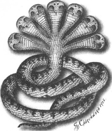
Narayana: Yedi Başlı Yılan, Yaratıcı’nın
ve Yaratılış’ın Sembolü.
Nara, “Kutsal Olan”; Yana, her şeyin yaratıcısı.
Naacaller, yedi üstün zihin ve Vedânta da yedi zihinsel
boyut anlamına geliyor.
Ve yeraltının alevleri, toprağı, onu kaplayan suların üzerinde belirene dek yükseltti ve kuru toprak ortaya çıktı.”
Beşinci emir:
“Sulardan yaşam doğsun. Ve güneşin ışınları, suların çamurunda dünyanın ışınlarıyla karşılaştı ve orada kozmik yumurtalar (canlı hücreler) oluştu. Bu kozmik yumurtalardan, emredildiği gibi yaşam doğdu.”
Altıncı emir:
“Karada yaşam doğsun. Ve güneşin ışınları, kuru toprağın tozlarında dünyanın ışınlarıyla karşılaştı ve onlardan kozmik yumurtalar meydana geldi. Bu kozmik yumurtalardan da karada yaşam doğdu, tıpkı emredildiği gibi. (Fig. 6c) Ve tüm bunlar olup bittikten sonra yedinci zihin konuştu: Bize benzeyecek olan insanı yaratalım ve ona, bu dünyayı yönetmesi için güçler bahşedelim.”
“Ve sonra Narayana, Yedi Başlı Zihin, evrendeki her şeyin Yaratıcısı insanı yarattı; onun bedenine yaşayan, ölümsüz bir ruh yerleştirdi ve insan, zekasıyla Narayana’nın benzeri oldu. Ve yaratılış böylece tamamlandı.”
Bu yedi emir şüphesiz yedi zaman dilimini de temsil ediyor. Bu zaman dilimi belirli bir süreyle ölçülmüyor. Bir gün anlamına gelebileceği gibi bir yıl, hatta bir milyon yıl anlamına da gelebilir. Dolayısıyla bu tabletler yaratılışın ne kadar süre aldığı hakkında bir fikir vermiyor. Tabletlerde kayıtlı olanların gerçekleşmesi milyonlar veya on milyonlarca yıl sürmüş olabilir. Burada anlatılmak istenen şey, basitçe, dünyanın yedi zaman diliminde yaratıldığı; Kitabı Mukaddes efsanesinin anlattığı gibi yedi günde değil.
Naacal kayıtlarının yaratılıştan bahseden bu giriş kısmının, Kitabı Mukaddes’te anlatılan hikâyeye benzerliği şaşırtıcı boyutta. Hikâyenin devamındaki farklılıkların boyutu için de aynı şey söylenebilir. Yaratılış efsanelerine tüm dünya halklarında oldukça sık rastlanıyor ve her efsanede birbirinin aynısı olan o kadar çok kısım buldum ki, buradan varılabilecek tek sonuç, tüm bu efsanelerin ortak kökenli olduğu ve Mu’da ortaya çıktığı.
Yedinci emir tercüme etmesi en güç olandı. Başta deşifre etmek kolay olsa da eskilerin kullandığı kelimelerin tam karşılığı olan güncel kelimeler bulmanın imkânsız olduğunu gördük. “Ruh” veya “öz” insan bedenine yerleştirilen şeyi tanımlamak için bulabildiğimiz en yakın karşılıklardı. “Yaşayan” sözü orijinal metinde kastedilen anlamı tam olarak karşılamıyor olabilir. Öte yandan “ölümsüz” sözü, kuşkusuz tam olarak doğru. Fakat “bize benzeyecek olan” gerçekte ne anlama geliyor? Şüphesiz burada kastedilen “bizim suretimizde” değil. Bu söz, bir anlamda düşünceye ve mistik güçlere karşılık geliyor, bu da “ona dünyayı yönetmesi için güçler bahşedelim.” sözüyle destekleniyor.
Kitabı Mukaddes, “Tanrı’nın nefesi”nden bahsederken sembolik anlatımın güzel bir örneğini kullanıyor. Bunun anlamının Tanrı’nın sunduğu özel güçler olduğu açık ve bu yüzden de bahsedilen Tanrı’nın bir parçası olarak görülebilir, tıpkı bir yaprağın, ağacın bir parçası olması gibi. İnsan, Tanrı’dan gelmiştir ve geldiği yere dönmelidir.
Naacal Tabletleri’ni tercüme etmek oldukça zordu, çünkü çok fazla desen ve resimle çok az yazı içeriyorlardı. Bazı aşınmış ve parçalanmış kısımların anlamlarını ortaya çıkarmak da mümkün değildi. Ayrıca günümüz dillerinde karşılığı olmayan bazı kelimeler karşımıza çıkıyordu.
Çalışmalarımızın başlarında rahip dostum bana antik tablet ve yazıtları deşifre etmenin, Naga-Maya adıyla tanımladığı dil hakkında bilgi sahibi olmadan mümkün olmadığını açıkladı; çünkü Mu ile ilgili tüm antik yazılar bu dille yazılmıştı ve tüm Naacal yazıları, yalnızca Naacallerin ve onların eğittiklerinin bildiği ezoterik veya gizli anlamlar içeriyordu. Dostum bu gizli dilin anahtarını elinde tutuyordu ve nasıl kullanıldığını bana öğrettikten sonra bu dil, benim için birçok tuhaf kapının kilidini açan “açıl susam” sözü oldu.
İki yıldan uzun süreyi bu antik dili öğrenerek ve ara sıra şifre çözümüyle uğraşıp kendi gelişimimi takip ederek geçirdim. Yaşlı Hintli dostum ve öğretmenim, işimiz bittiğinde bana şöyle dedi: “Oğlum, genel anlamlara ulaştık, ince detaylara değil.” Burada açık yüreklilikle itiraf etmem gerekir ki, bu sevgili, yaşlı nazik dostum olmasaydı, bu tabletlerin anlamlarını çözmem asla mümkün olmazdı.
Bu tabletlerin ve benzerlerinin öğretilerinin yansımalarını eski Hint edebiyatında, ayrıca başka eski edebi eserlerde de buluyorum. Örnek olarak:
Hindu: Manava Dharma Sastra, Kitap 2, sloka 74: “Başlangıçta yalnızca Adite denilen Sonsuzluk vardı.” Kitap 1, mısra 8: “Bu tohum bir yumurta oldu.” Kitap 1, sloka 10: “Başlangıçta görülen evren yalnızca karanlıktı.” Kitap 1, sloka 9: “O, önce suları yarattı ve o sulara bir yumurta bıraktı.”
Rig Veda, sloka 3, sayfa 316-317 (M.Ö. 2000-2500): “Bu yumurtada, Ulu Varlık’ın zihni, onun tüm insan ve tanrıların sevecen anası olan tanrıça Maya ile birlikteliği sonunda, Buddha’nın formunda vücut buldu.” (Bu aynı zamanda 1700 yıl sonra ortaya çıkacak olan Adem ile Havva hikâyesiyle uyuşuyor.) Sayfa 3: “Onun dışında hiçbir şey yoktu, her şey karanlıktı.” Sayfa 4: “O ki havadaki ışığı seçip ayıran.”
Aitareya-A’ram-’ya, sloka 4-8: “Başta bu evren bir ruhtan ibaretti, canlı veya cansız hiçbir şey var olmamıştı. ‘Alemler yaratmayı arzuluyorum,’ diye düşündü ve alemleri, ışığı, ölümlü varlıkları, içinde ışığı barındıran gökyüzünü, çürüyüp giden toprağı ve suların hâkim olduğu derinlikleri yarattı.”
Yucatan-Nehuatl: “Gökyüzünün parçaları ilahi oklarla vurulunca hayatla doldular. Maddenin hareketini belirleyen ısı, onun içinde gelişti.”
Yazılı ve sözlü tarihin anlattığı gibi, bu kitapların antik tapınak kayıtlarından derlenerek yazıldıkları ve tapınak kayıtlarının da dini ve bilimi öğreten Naacaller tarafından yazıldığı konusunda en ufak bir şüphe yok.
Güney Hindistan’da tapınaklarda antik yazılarla dolu kütüphaneler var, fakat görünüşe bakılırsa bunların hiçbiri Sanskritçeden öteye gitmiyor. Başrahiplerle beraber bunların bir kısmı üzerinde çalıştım, tümü Sanskritçeydi ve dini konular hakkındaydı. Hiçbiri tarihi önem taşıyan bilgiler içermediğinden onları incelemeye devam etmek için yeterli sebep göremedim.
Yaratılış efsanesinin, dünyanın farklı bölgelerinde oldukça fazla varyasyonu bulunuyor. Şüphesiz bunun sebebi kuşaktan kuşağa aktarılış biçimleri. Kulağa ürkütücü gelse de en bilimsel versiyonu ve Naacal efsanesi hariç, diğer tüm efsanelerden farklı olarak jeolojik araştırmalarla desteklenebilir olanı Güney Denizi Adaları’nda yaşayan ilkel ve yamyam ırklar arasında, özellikle de Marquesas yerlilerinde bulunuyor.
Hintliler, Kaldeliler, Mısırlılar, Mayalar ve Yunanlılar, ilerleyen zamanlarda yaratılışı tanımlarken bilimsel kısımları attılar ve gerçekleri, sembolleri kullanarak, nedenler ve açıklamalar olmadan kaydettiler. Bunun sebebini İskenderiyeli Klemens çok güzel açıklıyor:
“Mısırlılar ne sırlarını herkesle paylaştılar ne de ilahi gizemlerini dinsizlere anlatarak değersizleştirdiler. Bunun yerine, onları tahta çıkacak varise veya erdemi ve bilgeliğiyle kendini kanıtlamış rahiplere sakladılar.” Diğer bir deyişle, ezoterik anlamlar açık açık paylaşılmadı.
Musa’nın Kitabı Mukaddes’te bulunan hâliyle kaleme aldığı Mısır yaratılış efsanesinin; Naacallerin yedi kutsal ilhamlı yazıyı, dini ve bilimi öğretmek için Mısır’a gittiklerinde Hindistan’dan geldiği kesin. Dolayısıyla bugün Hristiyan dünyada pazar günleri kiliselerde anlatılan dramatik öykünün kökeni kayıp kıta Mu’ya dayanıyor.
Bu bölümü Naacal yaratılış öyküsündeki iki eksik halka ve Niven’in Meksika Taş Tabletleri’nden ikisi ile sonlandıracağım:
Tablet 1231. Bu Niven’in 2600 tabletlik koleksiyonundaki en ilginç ve her açıdan en değerli tabletlerden biri, çünkü bu evrenin hareketleri ve işleyişinin bir anahtarı.
1231 numaralı tablet, antik yazıların en eskisinden günümüze kadar sayısız isim ve kisve altında, insanoğlunun Yaratıcı ve Yaratılış’a dair geliştirdiği anlayışta büyük yer tutan Kutsal Dörtlü’nün sembolü.
Naacal yazıları Kutsal Dörtlü’nün, Yaratıcı’nın evrendeki kaostan düzen ve yasa yaratan emirleri olduklarını söylüyor. Bu görevi tamamladıklarında fiziksel evrenin idaresi onlara verildi. Meksika Tabletleri de tam olarak aynı şeyi anlatıyor.
Naacal Tabletleri boyunca sembolik isimlerle anılıyorlar. Kutsal Dörtlü’nün Yaratılış’ın İlk Dört Büyük Emir’i dışında
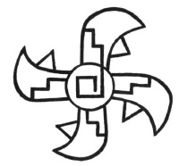
Tablet No 1231
ne olduklarını açıklayacak Naacal tableti kayıp. Kutsal Dörtlü’ler Emir olduklarından yerine getirilmeleri için bir şeye yöneltilmeleri gerekiyordu. Peki bu şey neydi? Şimdiye kadar antik yazıt ve kayıtlar arasında bu sorunun cevabına rastlamamıştım, fakat bu tablet gereken bilgiyi sağlıyor. Bunun benim bir teorim olduğunu düşünenler için, 1231 numaralı tabletin açılımını, deşifre edilişini ve tercümesini gösteriyorum.
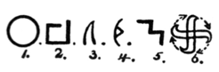
Anahtar
1. Bu diyagram veya desenin merkezindeki çember, güneşin, yani Ra’nın bir resmi. Bu, dini öğretilerde kullanılan ilk üç sembolden biriydi. Tek Tanrıcı anlamı yüzünden de aralarında en kutsal olandı.
2. Çember içinde anayurdun hiyeratik (M.Ö. 2500 yılı civarında, hiyerogliften aşamalı olarak doğan Mısır yazısına verilen ad. Hiyeroglifteki formel resim yazısını, aynı ilkelere dayanan yuvarlak hatlı bir yazıya dönüştürmüştür) alfabesinin H harfi bulunuyor. Rahip sınıfına ait olduğundan sembolik bir anlam taşıyor ve Kutsal Dörtlü’yü temsil ediyor. Çemberin içinde olduğundan Yaratıcı’nın içinde. Dolayısıyla Kutsal Dörtlü, Yaratıcı’nın bir parçası. Onun ağzından çıkıyor, onun güç ve enerjisiyle var oluyorlar. Kutsal Dörtlü, Dört Büyük Temel Kuvvet’in böylece doğrudan Yaratıcı’dan geldikleri anlatılıyor. Yani eskilerin dediği gibi, “Onun arzuları,” “Onun istekleri” ve “Onun emirleri.”
3. Bu Kuvvet’in bir sembolü. Tabanı gücün kaynağını, ucu da gücün işleyişi sırasında aldığı yönü gösteriyor. Bu desende güç batıdan doğuya yol alıyor.
4. Dört Kuvvet’in her birinin üzerinde bir ok veya mızrak başı bulunuyor. Bu etkinliğin sembolü, gücün ölmediğini ve batıdan doğuya yönelik dönüşünü sürdürdüğünü gösteriyor. Eskiler bunu anlayıp şöyle dediler: “Bu görev tamamlandığında fiziksel evrenin idaresi onlara verildi.”
5. Bu sembol Mühendis kelimesini oluşturuyor. Bu kelime Dört Kuvvet’in her birinin içinde yazılı. Dolayısıyla burada Dört Büyük Mühendis-Dört Büyük Temel Kuvvet olarak adlandırılıyorlar. Temel Kuvvet olmalarının sebebi doğrudan Yaratıcı’dan geldiklerinin gösterilmiş olması.
6. Bu sembol dört gücün birleşmesiyle oluşuyor. Tümü batıdan doğuya hareket ediyor ve uçları evreni temsil eden bir çember oluşturuyor.
Dolayısıyla bu güçler evrendeki her cismin hareketlerinden sorumlu. Sembol dönmekte olan tüm cisimlerin batıdan doğuya gittiğini ve oluşturdukları tüm yörüngelerin batıdan doğuya doğru, dolayısıyla da bir merkez etrafında olduğunu anlatıyor. Sembolik olarak da ifade edildiği gibi Merkez, Yüce Sonsuzluk olan Temel Kuvvet, yani Tanrı.
Bu tasvirin simgesel anlatımı göz önüne alındığında, bahsedilen merkez evrendeki herhangi bir konuma karşılık gelmiyor. Merkezin asıl karşılığı olan O, Tanrı, Merkezde Olan, emirleriyle evrendeki her cismin doğrudan veya dolaylı olarak -örneğin başka kuvvetlerin veya bunların işleyişi sonucu ortaya çıkan, bazıları muhtemelen atomik güçler olarak da adlandırılabilecek aracılar vasıtasıyla- hareketini sağlıyor.
Niven’in 2600 tabletinden en az 1000 tanesi Dört Temel Kuvvet’in işleyişine ayrılmış. Sonuncu sembol olan 6 numaraya ise sık rastlanıyor. Henüz bu sembolü değerlendirirken onu Svastika ile karıştırma hatasına düşmemiş bir arkeolog bulabilmiş değilim.
Tablet 998. Bu, Temel Büyük Manyetik Kuvvetler’den birine değiniyor. Büyük Manyetik Kuvvet’in evrenin her tarafında var olduğunu gösteriyor.
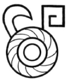
Tablet No 988
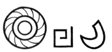
Anahtar
Evren iki dış çemberin arasında tasvir edilmiş. Merkezdeki çember Yaratıcı’yı temsil ediyor. Evren boyunca akan kavisli çizgiler güce ait. Çizgilerin kavisli olması dönmekte olan bir merkezden çıktıklarında görülen bir durum. Hareket yönleri batıdan doğuya doğru, bu gücün aktığı yönü gösteren Kuvvet sembolüyle anlatılıyor.
Bunun Dört Büyük Temel Kuvvet’ten biri olduğu, üzerine iliştirilen Kutsal Dörtlü’nün alfabetik sembolü ile belirtiliyor. Dolayısıyla 1231 numaralı tablette olduğu gibi yine Dört Büyük Temel Kuvvet’in Yaratıcı’dan geldikleri gösteriliyor.
Tablet 339. Niven’in Meksika Taş Tabletleri koleksiyonundan.
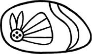
Tablet No 339
Bu taştaki resim, Düzen ve Yasa’nın bir kelebek tarafından yaratılış ve idaresinin oldukça sanatsal bir betimlemesi.
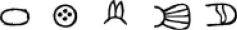
Anahtar
Taşın kenarlarını takip eden uzatılmış çember evreni, sonu olmayan boşluğu temsil ediyor. Kelebeğin başı içinde dört disk bulunan bir çember. Çember Yaratıcı’yı, diskler ise 4 sayısını temsil ediyor, yani Kutsal Dörtlü’yü. 4 ve 1’in toplamı olan 5 ise tam Tanrısallığın sayısal karşılığı.
Kelebeğin kafasındaki iki anten düzen ve yasayı temsil ediyor.
Kanat iki şekilde değerlendirilebilir. Beş çizgi tüm Tanrısallık ve aradaki dört boşluk da Kutsal Dörtlü.
Bir dil evren boyunca uzanıyor. Dil, konuşmanın ve emretmenin sembolü; dolayısıyla düzen ve yasanın evrene hüküm sürmesi “emri” iletiliyor. Emri taşıyan ise kelebek.
Anlamı: Yaratıcı’nın emriyle, Kutsal Dörtlü evrende Düzen ve Yasa’nın tohumlarını atıyor.
İnceleme fırsatı bulduğum Naacal Tabletleri erkeğin diğerlerine kıyasla özel olan yaratılışıyla sonlanıyordu. Devamını getirecek tabletler yoktu. Bu koleksiyonda hikâyeyi eksik kılan başka birçok kayıp halka vardı; çünkü kadının varoluşu ve insanın bir ırk olarak tamamen ortaya çıkışıyla ilgili bilgi verilmiyordu. Yakın zamana dek bu konuda efsaneler haricinde hiçbir şey bilinmiyordu. Öte yandan efsaneler çok sayıda ve evrenseldi.
Tablet 1584. Bu tablet Kutsal İlhamlı Mu Metinleri’nin, bendeki Naacal Tabletleri’nin sonlandığı Yedinci Emir’den sonrasını anlatıyor.
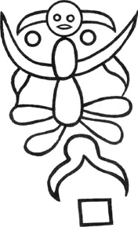
Tablet No 1584
Öte yandan Naacal ve Meksika Tabletleri arasında bir fark var. Naacal tabletlerinin anayurtta doğrudan Kutsal İlhamlı Yazılar’dan kopyalandığını bilsek de Meksika Tabletleri’nin nerede yazıldıkları hakkında bir fikrimiz yok.
Kutsal Metinler’den alıntı yapan 1584 numaralı tablet Naacal Tabletlerin’den on binlerce yıl sonra yazılmış, üstelik ne yazanların uzmanlığı ne de nerede yazıldığı hakkında bir bilgi vermiyor. Büyük olasılıkla Amerika’da, çünkü Kutsal Metinler’i içeren ve anayurtta yazılan tabletlerin tümü kilden yapılmıştı. Meksika Tabletleri ise taş üzerine kazınmış.
Meksika Tabletleri’nin doğudakilerden çok daha ileri bir tarihte yazılmış olması; içeriklerinin anayurttaki orijinalleriyle birebir aynı mı kaldığı, yoksa zamanın onlara yeni bir kozmogoni aşılayıp, esas detaylardaki küçük değişikliklerle onları daha modern bir rahip sınıfının görüşlerine uyacak bir hâle mi soktuğu sorusunu akla getiriyor.
1. İnsanoğlunu temsil eden bir insan başı. Gözler cansız ve donuk, dolayısıyla ölüm hâlinde, yani antik tabletlerde bahsedilen uykuda resmedilmiş. Eskiler insanın gerçekten ölebileceğine inanmazdı. (Ruh)
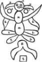
Anahtar
2. Kozmik Kuvvetler’in sembolleri burada insanoğluna “dünyayı yönetmesi için” bahşedilen güçlerden birini temsil ediyor.
3. Bu güçler insanın başından çıktıkları için, söz konusu güçlerin zihinsel oldukları anlatılmış oluyor.
4. Vücut iki kozmik yumurtadan oluşmuş. Üstteki yumurta başla, alttakiyse onun alt kısmıyla bitişik, dolayısıyla vücudun bir ikiz olduğu söyleniyor.
5. Boynun iki yanında birer tane olmak üzere iki çember var. Yaratıcı’nın sembolü, bu yaratılışın bir bakıma bizzat Yaratıcı’nın kendisi tarafından gerçekleştirildiğini anlatıyor. Çemberler “zihinsel” anlamını pekiştirmek için başa yakın resmedilmiş.
6. Yukarıdaki yumurtanın iki yanından çıkan birer enerji ve onlara bağlı olan, aşağıya doğru hareket eden ve uçları kuluçkadaki başka kozmik yumurtalara dokunan ve onlara yaşam verecek olan ikincil enerjiler görünüyor.
7. Daha önce de bahsedildiği gibi vücudun alt kısmı bir kozmik yumurtadan oluşuyor. Bu kozmik yumurtadan çıkan dört yumurta, alt kısmın dişi karakterde olduğunu gösteriyor.
Başka yumurtalar yerine yalnızca enerji oluşturduğu için, erkek olduğu görülen üstteki yumurtanın enerjileriyle vücudun alt kısmını oluşturan yumurtanın meydana getirdiği kozmik yumurtalar arasındaki ilişki, insanın kozmik güçlerinin ebeveynlerden çocuklarına geçerek varlığını sürdürdüğünü gösteriyor.
8. Bu sembol bir makas veya ayırıcı bir güç. Birbirleri üzerine kapanan ve aralarında kalan her şeyi ayıran bir çift güç tasvir ediliyor. Bedeni ölüm sırasında ayırarak erkek ve kadını yaratan güç de buydu.
Sonuçta hikâyenin tümü şu hâle geliyor: İlk insan iki öze sahipti. Bu ilk yaratım, ilk adam uykuya (bugünkü anlamıyla ölüm) yatırıldı. Uykusunda özler ayrıldı ve ilk insan iki oldu: Bir adam ve bir kadın. Bundan sonra, erkek ve kadın çoğaldı. Bu ilk çiftten tüm dünya insanla doldu.
Bu ürkütücü bir efsane ve üzerinde yeterince düşünmeyenler için doğru olması mümkün değil. Oysa bu efsane çağlar boyunca tekrarlandı ve günümüzde de bizim tarafımızdan tekrarlanmayı sürdürüyor.
Kitabı Mukaddes’ten şu kısımları paylaşıyorum:
Yaratılış, Bölüm 2, Ayet 22: “Ve Rab Tanrı, Âdem’den aldığı kaburga kemiğinden bir kadın yaratarak onu Âdem’e getirdi.”
Bölüm 3, Ayet 20: “Ve Âdem karısının adını Havva koydu, çünkü o bütün yaşayanların annesiydi.”
Kitabı Mukaddes’teki bu hikâye, kelimesi kelimesine değil, sembolik bir anlatımla ve farklı bir dilde de olsa bu tabletin üzerinde yazanların aynısını anlatıyor. Hem bu hikâye hem de Meksika’daki, aynı kaynaktan, Mu’nun Kutsal İlhamlı Metinleri’nden alıntı.
Benzer bir efsaneye Güney Pasifik Okyanusu’ndaki Polinezya Adaları yerlileri arasında da rastlanıyor. Onların efsanesi ise şöyle:
“Taaroa, kızıl toprak Araea’dan adamı yarattı ve onun burnuna soluğunu üfledi. Adamın kemiklerinden kadını yarattı ve ona Evi1 adını verdi.”
Yunan filozofu Eflatun şöyle yazıyor: “Başta insanlar erkek ve kadın aynı bedende var olmak suretiyle yaratılmışlardı. Her bedenin dört kolu ve dört bacağı vardı. Bedenleri yuvarlaktı ve yuvarlanıp duruyorlar, kendilerini elleri ve ayaklarıyla hareket ettiriyorlardı. Zaman geçtikçe tanrılara karşı saygısızlık yapmaya başladılar. Kurban sunmayı bıraktılar ve hatta yuvarlanarak Olimpos Dağı’na çıkıp tanrılara saldırarak onları tahtlarından indirmekle tehdit etmeye başladılar. Tanrılardan biri hepsini öldürelim, ‘bizim için tehlikeliler!’ dedi.
Bir diğeri, ‘Hayır, benim daha iyi bir fikrim var. Bedenlerini ikiye bölelim, böylece sadece iki kolları ve iki bacakları olur. Yuvarlak olmazlar ve yuvarlanamazlar. Sayıları iki katına çıkacağı için bize şimdikinin iki katı kurban sunarlar. En önemlisi de her biri diğer yarısını aramakla o kadar meşgul olur ki bizi rahatsız edecek vakit bulamazlar, dedi.’
İkinci tanrı bilge olandı. Onun fikri işe yaradı. Her yarım insan, erkek veya kadın, diğer yarısını, ‘ruh eşini’ aramaya öylesine daldı ki, diğer her şey bir kenara bırakıldı.”
Hindu: Rig Veda, Langois’in tercümesinde, sloka 3, sayfa 316-317’de şöyle diyor: “Bu yumurtada, Ulu Varlık’ın zihni, Buda’nın formunda temsil edildi; onun, tüm tanrıların ve diğer varlıkların (yaşayan veya ölü) sevecen anası olan Tanrıça Maya ile birlikteliği sonunda, bütün varlıklar yaratılmış oldu.”
Çinli Lao Tzu, M.Ö. 500’de “Taote-King”de şöyle yazıyor: “Mantık, Tao, Bir’i yarattı. Bir, iki oldu; ikisi birlikte üçü oluşturdu ve üç de bütün varlıkları.”
Doğu ülkeleri ilk insanın çift özlü yaratılmasıyla ilgili birçok efsaneye sahip. Çoğu ayrılmanın uyku (ölüm) sırasında gerçekleştiğini söylüyor.
Bu kozmogoni hakkında yorum yapacak değilim. Kendi sonuçlarına varmak okuyucuya kalıyor.
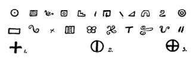
Sık kullanılan sembolleriyle
Mu Hiyeratik Alfabesi
1 Evi Polinezya dilinde Eve-i şeklinde telaffuz ediliyor. Benzer efsanelere Mısır yazılarında da rastlanılıyor.